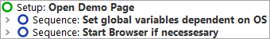
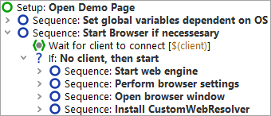

| Version 6.0.3 |
Our first step is to examine the "Setup" node:
|
|  | ||
|
| Figure 10.3: The Setup Node | ||
In the "Setup" node you'll see two child Sequence nodes:
Let's also have a brief look inside the Sequence: Start browser if necessary:
|
|  | ||
|
| Figure 10.4: The Sequence to start the Browser | ||
First you see a "Wait for client" node to double-check whether the client is already running. Only if it is not, it will be started.
The browser start itself happens in four steps:
These four steps are automatically generated when you use the Quickstart Wizard, that will be explained in the next tutorial chapter 11.
At this point, we're ready to actually start the Browser:
During execution QF-Test marks the active step by use of an arrow pointer "->".
When the setup sequence is completed, the browser with the "CarConfigurator" demo page is going appear on the screen.
|
|  |
||
|
| Figure 10.5: The CarConfigurator web demo page | ||
| Last update: 9/6/2022 Copyright © 2002-2022 Quality First Software GmbH |